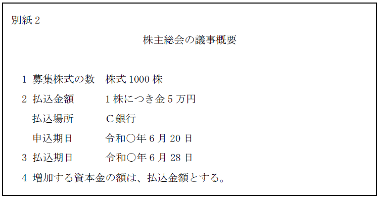
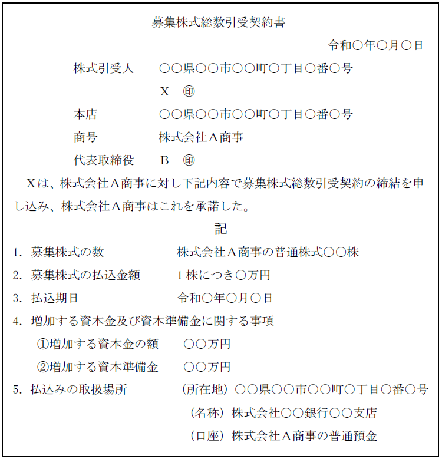
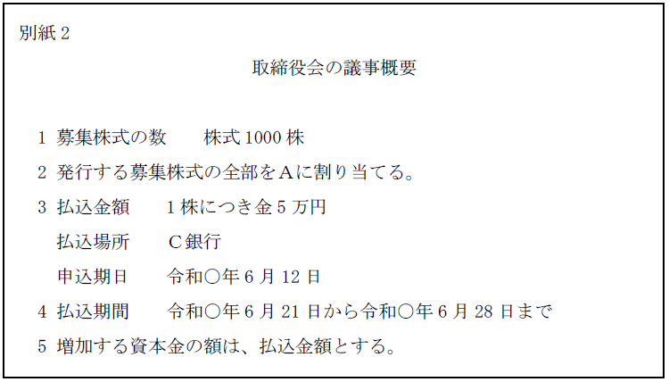
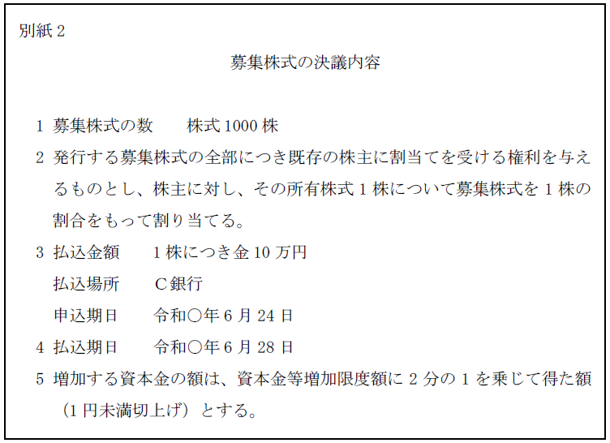
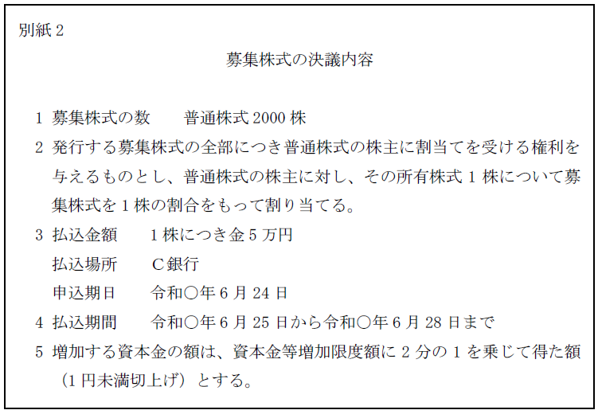

第２編 株式会社
第３章 株式
第１０節 募集株式の発行等
Ⅵ 募集株式の発行等をやめることの請求
1. 意義
募集に係る株式の発行又は自己株式の処分が法令若しくは定款に違反する場合、又は著しく不公正な方法により行われる場合において、株主が不利益を受けるおそれがあるときは、株主は、株式会社に対し、当該株式の発行又は自己株式の処分をやめることを請求することができる（会社法210条）。
2. 趣旨
個々の株主の利益を保護するための規定である。
3. 要件
持株数や保有期間の要件はないため、1株主であっても、公開会社において取得したばかりの株主であっても、請求することができる。
Ⅶ 募集に係る責任等
募集株式の引受けの申込み及び割当て並びに総数の引受けを行う契約に係る意思表示については、以下の制限がある。
無効・取消しの可否（会社法211条1項、2項）
| 株主となった日から1年経過前 | 株主となった日から1年経過後 | ||
| 権利行使前 | 権利行使後 | ||
| 心裡留保、 通謀虚偽表示 |
×（会社法211条1項） | ||
| 錯誤、詐欺、強迫 | ○ | × | × |
私人間の取引を規定した民法の場合と異なり、株式の引受けには、利害関係人が多く、影響が大きいからである。
※行為能力の制限を理由とする取消しの主張については、上記のような制限はない。
取締役（指名委員会等設置会社では、取締役又は執行役）と通じて著しく不公正な払込金額で株式を引き受けた者は、当該払込金額と当該募集株式の公正な価額との差額に相当する金銭を支払う義務を負う（会社法212条1項1号）。
現物出資財産の価額が募集事項として定められた価額に著しく不足する場合、次に掲げる者は不足額を支払う義務を負う。
| 支払義務を負う者 | 免責事由等 |
| 引受人（会社法212条1項2号) | 価額が著しく不足することにつき善意・無重過失であるときは、募集株式の引受けの申込み又は総数の引受けを行う契約に係る意思表示を取り消すことができる(会社法212条2項)。 |
| 取締役等（※1）（※2） | ①検査役の調査を受けたとき ②職務を行うことにつき注意を怠らなかったことを証明したとき |
| 現物出資財産の価額が相当であると証明した者（証明者）(会社法213条3項)（※3） | 当該証明をすることにつき注意を怠らなかったことを証明したとき |
※1 以下の者である（会社法213条1項）。
①当該募集株式の引受人の募集に関する職務を行った業務執行取締役（指名委員会等設置会社では、執行役）
②現物出資財産の価額を決定した株主総会において、当該議案を提出した取締役
③現物出資財産の価額を決定した取締役会において、当該議案を提出した取締役（指名委員会等設置会社では、取締役又は執行役）
※2 不足額支払義務を負う募集株式の引受人と、不足額てん補責任を負う取締役等とは、連帯債務者となる(会社法213条4項1号)。
※3 不足額支払義務を負う募集株式の引受人と、不足額てん補責任を負う証明者とは、連帯債務者となる（会社法213条4項2号）。
1. 意義
仮装払込みを行った引受人は、払込期日又は払込期間の経過後であっても、払込金額の全額の支払義務を負う（会社法213条の2第1項。新株予約権の行使について、会社法286条の2第1項）。資金調達の公正を害さないための規定である。
2. 内容
(1) 支払義務等を負う者と免責事由
| 支払義務等を負う者 | 免 責 |
| 仮装払込み等を行った引受人（会社法213条の2第1項） | 総株主の同意があれば免除可（会社法213条の2第2項） |
| 仮装払込み等に関与した取締役等（会社法213条の3第1項）（※1）（※2） | ・職務を行うについて注意を怠らなかったことを証明した場合 ・責任免除に関する通常の手続（会社法425条から427条）による免除可 |
※1 出資の仮装に関する職務を行った取締役、執行役、募集株式の発行等の決議に賛成した取締役、執行役等が該当する（会社施行規46条の2）。
※2 仮装払込みを行った者と連帯債務者となる。
(2) 範囲
・払込みを仮装した出資に係る金銭の全額の支払義務
・給付を仮装した出資に係る金銭以外の財産の全部の給付義務
3. 株主権の行使
(1) 引受人
引受人又は関与取締役等が上記の義務を履行した後でなければ、引受人は、出資の履行を仮装した株主権を行使することができない（会社法209条2項）。
(2) 仮装株式の譲受人
仮装払込人から当該株式を善意無重過失で譲り受けた者がある場合、仮装払込人等の義務が履行されていなくても、譲受人は、株主の権利を行使することができる（会社法209条3項）。
Ⅷ 募集株式の発行の登記
1. 通常の募集株式の発行
(1) 原則
募集株式の払込期日を定めた場合には、出資の履行日（株式の発行の効力が生じる日（会社法209条1号））から2週間以内に変更の登記を申請しなければならない。
(2) 例外
募集株式の払込期間を定めた場合には、当該期間内における現実の出資の履行の期日（発行の効力が生じる日（会社法209条2号））に関わりなく、払込期間の末日から2週間以内に、それまでの変更分を一括して変更する登記の申請をすることができるとされている（会社法915条2項）。
2. 取締役等の報酬等である募集株式の発行
取締役等の報酬等である募集株式の発行の場合、払込み又は給付を要しないため、割当日から２週間以内に、変更の登記を要する（会社法915条1項）。
なお、事前交付型の場合には、変更登記の時点では資本金の増加を伴わないが、その後、資本金が増加したときは、株主資本変動日から２週間以内に、変更の登記をしなければならない。
【申請例44 募集株式 非公開会社（第三者割当て）】
事例： 令和○年6月18日、別紙1の登記がなされた株式会社において、株主総会で、別紙2の内容の募集株式を発行する旨の決議がなされ、募集事項等株主に対する所定の通知がされた。第三者からの引受けの申込みに対し、同月25日、取締役会において、募集株式の申込人への割当てがなされ、所定の期日に払込みがなされた。なお、当該株式会社は自己株式を保有していない。
別紙1
登記事項証明書の内容の抜粋
| 発行可能株式総数 | 8000株 |
| 発行済株式の総数並びに種類及び数 | 発行済株式の総数 2000株 |
| 資本金の額 | 金1億円 |
| 株式の譲渡制限に関する規定 | 当会社の株式は、取締役会の承認がなければ譲渡することができない。 |
| 取締役会設置会社に関する事項 | 取締役会設置会社 |

| 1. 登記の事由 1. 登記すべき事項 1. 課税標準金額 1. 登録免許税 1. 添付書面 | 募集株式の発行 令和○年6月28日変更 発行済株式の総数 3000株 資本金の額 金1億5000万円 金5000万円 金35万円 株主総会議事録 1通 株主の氏名又は名称、住所及び議決権数等を証する書面（株主リスト） 1通 取締役会議事録 1通 募集株式の引受けの申込みを証する書面 1通 払込みがあったことを証する書面 1通 資本金の額が会社法及び会社計算規則の規定に従って計上されたことを証する書面 1通 委任状 1通 |
|---|
| 発行済株式の総数並びに種類及び数 | 発行済株式の総数 2000株 |
|
| 発行済株式の総数 3000株 |
令和○年6月28日変更 | |
| 令和○年7月5日登記 | ||
| 資本金の額 | 金1億円 | |
| 金1億5000万円 | 令和○年6月28日変更 | |
| 令和○年7月5日登記 | ||
1. 申請書の内容（募集株式 非公開会社・第三者割当て）
(1) 登記の事由
「募集株式の発行」と記載する。
(2) 登記すべき事項
「年月日変更
発行済株式の総数
10000株
資本金の額 金1億円」
等と記載する。
年月日は、払込期日又は払込期間の末日を記載する。
(3) 添付書面
ⅰ 募集事項の決定に関する書面
①募集事項を株主総会の決議によって決定した場合
・募集株式の発行を決議した株主総会議事録（特別決議の要件を満たすもの）
②募集事項の決定を株主総会の委任に基づいて、取締役の決定で行った場合
・委任に係る株主総会議事録（特別決議の要件を満たすもの）
・取締役の過半数の一致を証する書面
③募集事項の決定を株主総会の委任に基づいて、取締役会決議により決定した場合
・委任に係る株主総会議事録（特別決議の要件を満たすもの）
・取締役会議事録
※種類株主総会議事録（特別決議の要件を満たすもの）
種類株式発行会社においては、原則として添付する必要がある。
※株主の氏名又は名称、住所及び議決権数等を証する書面（株主リスト）（商登規61条3項）
ⅱ 払込期日に関する書面
①払込期日の延期
特定の者に募集株式を発行することとし、予定した全員から募集株式の申込みがあったが、一部の申込人の払込みが遅れることが明らかとなったため払込期日を延期した場合
・払込期日延期についての株式申込人全員の同意書、及び、払込期日の延期を決議した株主総会議事録又は取締役会議事録（昭40.1.13民甲79）。
払込期日前に払込期日を延期する場合において、1人でも引受けの申込みをしたものがあるときは、その者（複数ある場合には全員）の同意を要し、登記の申請の際にはその同意書を添付しなければならない（商登法46条1項）。払込期日の延期は株主となる時期の延期を意味する（会社法209条1項1号）。それにより配当がもらえなくなる可能性等があるためである。
②払込期日の繰り上げ
募集株式の引受人が払込期日前に全額の払込みを完了したため、払込期日前に募集株式の発行による変更の登記を申請する場合
・払込期日を繰り上げる旨の決議をした募集事項決定機関の議事録（ex. 株主総会議事録）
払込期日前に全額の払込みが完了したとしても、当然には、払込期日前において当該募集株式の発行による変更の登記を申請することはできないが、払込期日を繰り上げる旨の決議をした募集事項決定機関の議事録を添付したときは、当初の払込期日前の申請であっても受理できるとされている（昭37.6.13民甲1563）。
ⅲ 申込み及び割当てを証する書面等
①総数引受契約を締結しなかった（申込み及び割当てによった）場合
・募集株式の引受けの申込みを証する書面
・株主総会議事録（特別決議の要件を満たすもの）・株主の氏名又は名称、住所及び議決権数等を証する書面（株主リスト）又は取締役会議事録（割当ての決定機関に応じて変わる）
割当ての決定機関につき、定款で別段の定めを設けたときは、定款及び定款の定めに応じた機関によって承認があったことを証する書面の添付も要する。
②総数引受契約を締結した場合
・総数引受契約を証する書面、及び、当該契約の承認に係る株主総会議事録（特別決議の要件を満たすもの）・株主の氏名又は名称、住所及び議決権数等を証する書面（株主リスト）又は取締役会議事録
総数引受契約の承認機関につき、定款で別段の定めを設けたときは、総数引受契約を証する書面に加え、定款及び定款の定めに応じた機関によって承認があったことを証する書面の添付を要する。
【総数引受契約書の見本】

※募集株式の引受けの申込みが利益相反取引に該当する場合
募集株式を発行する株式会社の代表取締役と、募集株式を引き受ける株式会社の代表取締役が同一人であるときは、当該代表取締役が募集株式の申込みをすることは、募集株式を引き受ける会社において利益相反取引にあたるため、募集株式を引き受ける会社の株主総会（取締役会設置会社においては、取締役会）の承認を受けなければならない（会社法356条1項、365条1項）。
しかし、募集株式の発行等による変更登記の申請書には、当該議事録の添付は要しない（登研457P.121参照）。
ⅳ 払込みがあったことを証する書面
金銭出資の場合に必要となる。
出資の目的である金銭の払込みがあったことを証する書面として申請書に添付された書面が払込取扱機関における口座の入金の記録のある預金通帳の写しを合てつした代表取締役の作成に係る書面である場合において、当該入金の記録の日付が払込期日に先立つものであっても、当該申請は受理される。
ⅴ 検査役の調査報告書及びその附属書類、又は、その他所定の書面
現物出資がある場合に必要となる。
ⅵ 資本金の額が会社法及び会社計算規則の規定に従って計上されたことを証する書面
出資の目的が金銭である場合において、その全額を資本金の額に計上するときでも、当該登記の申請書には、資本金の額が会社法及び会社計算規則の規定に従って計上されたことを証する書面を添付しなければならない。
ⅶ 委任状
(4) 登録免許税
申請件数1件につき、増加した資本金の額の1000分の7（これによって計算した税額が3万円に満たないときは、3万円）（登免法別表1.24(1)ニ）。
【申請例45 募集株式 公開会社（第三者割当て）】
事例： 令和○年5月22日、別紙1の登記がなされた株式会社において、取締役会で、別紙2の内容の募集株式を発行する旨の決議がなされ、Ａに適法に通知を発し、同月24日、Ａに通知が到達した。そして、Ａから適法に申込みがされ、Ａに割り当てる旨の決定が取締役会でされた。その後、所定の期日にＡから払込みがなされた。なお、払込金額は、特に有利な額ではなく、支配株主の異動は生じていない。また、当該株式会社は自己株式を保有していない。
別紙1
登記事項証明書の内容の抜粋
| 発行可能株式総数 | 8000株 |
| 発行済株式の総数並びに種類及び数 | 発行済株式の総数 2000株 |
| 資本金の額 | 金1億円 |

| 1. 登記の事由 1. 登記すべき事項 1. 課税標準金額 1. 登録免許税 1. 添付書面 | 募集株式の発行 令和○年6月28日変更 発行済株式の総数 3000株 資本金の額 金1億5000万円 金5000万円 金35万円 取締役会議事録 1通 募集株式の引受けの申込みを証する書面 1通 払込みがあったことを証する書面 1通 資本金の額が会社法及び会社計算規則の規定に従って計上されたことを証する書面 1通 委任状 1通 |
|---|
2. 申請書の内容（募集株式 公開会社・第三者割当て）
(1) 登記の事由
「募集株式の発行」と記載する。
(2) 登記すべき事項
ⅰ 通常の募集株式の発行の場合
「年月日変更
発行済株式の総数 10000株
資本金の額 金1億円」等と記載する。
年月日は、払込期日又は払込期間の末日を記載する。
ⅱ 取締役等の報酬等としての募集株式の発行の場合
発行済株式の総数並びにその種類及び種類ごとの数、資本金の額（資本金が増加する場合のみ）並びに変更年月日である。
(3) 添付書面
【通常の募集株式の発行の場合】
ⅰ 募集事項の決定に関する書面
・募集株式の発行を決議した取締役会議事録
一度の取締役会における決議で複数回の募集事項を決定した取締役会の議事録は、各回の募集株式の発行による変更登記申請の際の添付書面となる（昭37.6.13民甲1563）。
※種類株主総会議事録（特別決議の要件を満たすもの）及び株主の氏名又は名称、住所及び議決権数等を証する書面（株主リスト）（商登規61条3項）
募集株式の種類が譲渡制限株式であるときに添付する必要がある。
ⅱ 申込み及び割当てを証する書面等
①総数引受契約を締結しなかった（申込み及び割当てによった）場合
・募集株式の引受けの申込みを証する書面
・取締役会議事録
募集株式の割当ての決定をしたことを証する書面（商登法46条2項）の添付を要するのは、募集株式が譲渡制限株式であるときに限られるため（平18.3.31民商782）、募集株式が譲渡制限株式である場合に添付する。
割当ての決定機関につき、定款で別段の定めを設けたときは、定款及び定款の定めに応じた機関によって承認があったことを証する書面の添付も要する。
②総数引受契約を締結した場合
・総数引受契約を証する書面
・総数引受契約について株主総会等の承認を要する場合（募集株式の種類が譲渡制限株式である場合）
総数引受契約を証する書面、及び、承認に係る取締役会議事録を添付する。
総数引受契約の承認につき、定款に別段の定めを設けたときは、総数引受契約を証する書面に加え、定款及び定款の定めに応じた機関によって承認があったことを証する書面の添付を要する。
ⅲ 払込みがあったことを証する書面
金銭出資の場合に必要となる。取締役等の報酬等である募集株式の発行の場合は不要となる。
ⅳ 検査役の調査報告書及びその附属書類、又は、その他所定の書面
現物出資がある場合に必要となる。
ⅴ 資本金の額が会社法及び会社計算規則の規定に従って計上されたことを証する書面
ⅵ 総株主の同意書（株主全員の同意書）及び株主の氏名又は名称、住所及び議決権数等を証する書面（株主リスト）（商登規61条2項）
募集事項の決定の日から払込期日又は払込期間の初日までの間に2週間を置かない場合に添付する。会社法の規定（会社法201条3項、4項）に従えば、「募集事項の決定の日から」ではなく、「通知又は公告の日から」とするべきであるが、通知又は公告をしたことを証する書面は添付書面ではなく、添付書面から通知又は公告の日は判明しないため、「募集事項の決定の日から」とされている。
ⅶ 委任状
※支配株主の異動を伴う募集株式の発行
以下の書面が必要となる場合がある。
・株主総会議事録（普通決議の要件を満たすもの）及び株主の氏名又は名称、住所及び議決権数等を証する書面（株主リスト）（商登規61条3項）
支配株主の異動を伴う場合に、総株主の議決権の10分の1以上の議決権を有する株主が、引受人の氏名等の通知又は公告の日から2週間以内に反対する旨の通知をしたときに添付する必要がある。
ただし、上記の反対通知があったが、公開会社の財産状況が著しく悪化しており事業の継続のため緊急の必要があり、株主総会決議の承認を要しない場合には、株主総会議事録及び株主リストではなく、株主総会の決議による承認を受けなければならない場合に該当しないことを証する書面を添付する必要がある（商登法56条5号）。具体的には、代表者の作成に係る証明書等がこれに該当する。
【取締役等の報酬等である募集株式の発行の場合】
上記の添付書面のほかに、以下の書面が必要である。
・取締役の報酬等である募集株式の発行をする場合に定めなければならない事項を定めたことを証するための ①定款、②株主総会議事録及び株主リスト、③報酬委員会の決定を証する書面 のいずれか
なお、取締役等の報酬等である募集株式の発行は、上場会社でなければすることができないが、上場会社であることについては、登記記録等から非公開会社でないことを確認すれば足りる。
(4) 登録免許税
【通常の募集株式の発行の場合】
申請件数1件につき、増加した資本金の額の1000分の7（これによって計算した税額が3万円に満たないときは、3万円）（登免法別表1.24(1)ニ）。
【取締役等の報酬等である募集株式の発行の場合】
事前交付型の場合には、変更登記の時点では資本金の増加を伴わないため、申請件数1件につき3万円となる（登録免許税法別表第一第24号(1)ツ）。
事後交付型の場合には、変更登記の際に資本金の増加を伴うことが想定される。この場合、増加した資本金の額の1000分の7（これによって計算した税額が3万円に満たないときは申請件数1件につき3万円）となる（登録免許税法別表第一第24号(1)ニ）。
【申請例46 募集株式 非公開会社（株主割当て・定款）】
事例： 令和○年6月22日、別紙1の登記がなされた株式会社において、取締役会で、別紙2の内容の募集株式を発行する旨の決議がなされ、株主に適法に通知を発し、同月23日に株主に通知が到達した。そして、株主全員（10名）が申込みをし、所定の期日に株主全員から払込みがなされた。当該株式会社の定款には、取締役会の決議により、株主割当ての募集株式の発行ができる旨の定めがある。また、通知期間短縮について、総株主の同意がある。なお、当該株式会社は自己株式を保有していない。
別紙1
登記事項証明書の内容の抜粋
| 発行可能株式総数 | 8000株 |
| 発行済株式の総数並びに種類及び数 | 発行済株式の総数 1000株 |
| 資本金の額 | 金1億円 |
| 株式の譲渡制限に関する規定 | 当会社の株式は、取締役会の承認がなければ譲渡することができない。 |

| 1. 登記の事由 1. 登記すべき事項 1. 課税標準金額 1. 登録免許税 1. 添付書面 | 募集株式の発行 令和○年6月28日変更 発行済株式の総数 2000株 資本金の額 金1億5000万円 金5000万円 金35万円 定款 1通 取締役会議事録 1通 募集株式の引受けの申込みを証する書面 10通 払込みがあったことを証する書面 1通 資本金の額が会社法及び会社計算規則の規定に従って計上されたことを証する書面 1通 通知期間短縮に関する総株主の同意書 1通 株主の氏名又は名称、住所及び議決権数等を証する書面（株主リスト） 1通 委任状 1通 |
|---|
3. 申請書の内容（募集株式 非公開会社 株主割当て・定款）
(1) 登記の事由
「募集株式の発行」と記載する。
(2) 登記すべき事項
「年月日変更
発行済株式の総数
10000株
資本金の額 金1億円」
等と記載する。
年月日は、払込期日又は払込期間の末日を記載する。
(3) 添付書面
ⅰ 募集事項の決定に関する書面
①募集事項を株主総会の決議によって決定した場合
・募集株式の発行を決議した株主総会議事録（特別決議の要件を満たすもの）及び株主の氏名又は名称、住所及び議決権数等を証する書面（株主リスト）（商登規61条3項）
②募集事項の決定を定款の規定に基づいて、取締役の決定で行った場合
・定款
定款規定があることによって取締役の決定で募集事項を定めることができるので、定款も添付する。
・取締役の過半数の一致を証する書面
③募集事項の決定を定款の規定に基づいて、取締役会決議により行った場合
・定款
定款規定があることによって取締役会で募集事項を定めることができるので、定款も添付する。
・取締役会議事録
※種類株主総会議事録（特別決議の要件を満たすもの）及び株主の氏名又は名称、住所及び議決権数等を証する書面（株主リスト）（商登規61条3項）
種類株式発行会社において、株主割当ての募集株式の発行等を行うことが、ある種類の株式の種類株主に損害を及ぼすおそれがあるときは、当該種類の株式の種類株主を構成員とする種類株主総会の議事録を添付する（特別決議の要件を満たすもの。会社法322条1項4号）。
ⅱ 募集株式の引受けの申込みを証する書面
※割当てに関する書面や総数引受契約を証する書面は、添付書面とならない。株主割当ての場合には、割当ての手続や総数引受契約がないからである。
ⅲ 払込みがあったことを証する書面
金銭出資の場合に必要となる。
ⅳ 検査役の調査報告書及びその附属書類、又は、その他所定の書面
現物出資がある場合に必要となる。
ⅴ 資本金の額が会社法及び会社計算規則の規定に従って計上されたことを証する書面
出資の目的が金銭である場合において、その全額を資本金の額に計上するときでも、当該登記の申請書には、資本金の額が会社法及び会社計算規則の規定に従って計上されたことを証する書面を添付しなければならない。
ⅵ 総株主の同意書（株主全員の同意書）及び株主の氏名又は名称、住所及び議決権数等を証する書面（株主リスト）（商登規61条2項）
募集株式の発行を決議した日と申込期日との間に、2週間の期間を置かない場合に添付する（昭54.11.6民4.5692）。「通知の日」ではなく「募集株式の発行を決議した日」とされている理由は、公開会社の第三者割当ての期間短縮についての総株主の同意書（株主全員の同意書）と同様である。
ⅶ 委任状
(4) 登録免許税
申請件数1件につき、増加した資本金の額の1000分の7（これによって計算した税額が3万円に満たないときは、3万円）（登免法別表1.24(1)ニ）。
【申請例47 募集株式 公開会社（株主割当て・種類）】
事例： 令和○年5月22日、別紙1の登記がなされた株式会社において、取締役会で、別紙2の内容の募集株式を発行する旨の決議がなされ、株主に適法に通知を発し、同月23日に株主に通知が到達した。そして、普通株式の株主全員（10名）が申込みをし、所定の期日に株主全員から払込みがなされた。なお、当該株式会社は自己株式を保有していない。
別紙1
登記事項証明書の内容の抜粋
| 発行可能株式総数 | 8000株 |
| 発行済株式の総数並びに種類及び数 | 発行済株式の総数 3000株 各種の株式の数 普通株式2000株 優先株式1000株 |
| 発行可能種類株式総数及び発行する各種類の株式の内容 | 普通株式5000株 優先株式3000株 1. 剰余金の配当 剰余金については、優先株式を有する株主に対し、普通株式を有する株主に先立ち、1株につき300円の剰余金を支払う。 |
| 資本金の額 | 金3億円 |

| 1. 登記の事由 1. 登記すべき事項 1. 課税標準金額 1. 登録免許税 1. 添付書面 | 募集株式の発行 令和○年6月28日変更 発行済株式の総数 5000株 各種の株式の数 普通株式 4000株 優先株式 1000株 資本金の額 金3億5000万円 金5000万円 金35万円 取締役会議事録 1通 募集株式の引受けの申込みを証する書面 10通 払込みがあったことを証する書面 1通 資本金の額が会社法及び会社計算規則の規定に従って計上されたことを証する書面 1通 委任状 1通 |
|---|
4. 申請書の内容（公開会社 株主割当て・種類）
(1) 登記の事由
「募集株式の発行」と記載する。
(2) 登記すべき事項
「年月日変更
発行済株式の総数
10000株
資本金の額 金1億円」
等と記載する。
年月日は、払込期日又は払込期間の末日を記載する。
(3) 添付書面
ⅰ 取締役会議事録
募集株式の発行を決議した取締役会の議事録
※種類株主総会議事録及び株主の氏名又は名称、住所及び議決権数等を証する書面（株主リスト）（商登規61条3項）
種類株式発行会社において、株主割当ての募集株式の発行等を行うことが、ある種類の株式の種類株主に損害を及ぼすおそれがあるときは、当該種類の株式の種類株主を構成員とする種類株主総会の議事録を添付する（特別決議の要件を満たすもの。会社法322条1項4号）。
ⅱ 募集株式の引受けの申込みを証する書面
ⅲ 払込みがあったことを証する書面
金銭出資の場合に必要となる。
ⅳ 検査役の調査報告書及びその附属書類、又は、その他所定の書面
現物出資がある場合に必要となる。
ⅴ 資本金の額が会社法及び会社計算規則の規定に従って計上されたことを証する書面
ⅵ 総株主の同意書（株主全員の同意書）及び株主の氏名又は名称、住所及び議決権数等を証する書面（株主リスト）（商登規61条2項）
募集事項の決定の日と申込期日との間に、2週間の期間を置かない場合に添付する（昭54.11.6民4.5692）。
ⅶ 委任状
(4) 登録免許税
申請件数1件につき、増加した資本金の額の1000分の7（これによって計算した税額が3万円に満たないときは、3万円）（登免法別表1.24(1)ニ）。